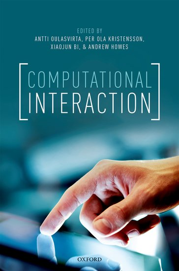

Computational Interaction & Intention
This year I have spent a fair bit of time thinking about research from the Finnish HCI researcher Antti Oulasvirta. First came his paper What is Interaction, with Kaspar Hornbaek and then a book he co-edited: Computational Interaction. What is Interaction is a broad ranging, high concept HCI paper, which had a big impact on how I’ve ended up thinking about my research. While Computational Interaction had less immediate impact, I was interested enough in it to work my way through the book, and attend the Computational Interaction summer-school in Cambridge at the end of August.
Computational Interaction deals with a new approach to HCI research, which places a stronger emphasis on cognitive modelling and conventional computer science methods and patterns. The book is a great resource for HCI researchers, and a substantial overview and introduction to the Computational approach. It introduces techniques from combinatorial optimisation, information theory, machine learning, and cognitive and economic modelling.

A major feature of the Computational Interaction approach is the desire to move towards more quantifiable measures of interaction, and to approaches which are more amenable to computational techniques. This comes in the context of HCI research which has increasingly moved towards less-empirical, more design-driven, approaches, embracing ethnography and studies “in-the-wild”, and being drawn to the holistic philosophies of thinkers as disparate, but equally scientifically-agnostic as Heidegger and Latour. Computational Interaction wishes to introduce more explicit proposing and testing of hypotheses, and more theory-building: the generation of testable concepts which can determine predictions and designs.
The other paper I mentioned - What is Interaction, is not explicitly linked to Computational Interaction, but many I have spoken to see it as (in some ways at least) intentionally laying an ideological groundwork for the approach. I can see the point, but I think I think this could be overemphasised. For one I think Hornbaek’s research is often related to but not really identifiable with Computational Interaction, and his involvement in the paper indicates it has significance beyond its relevance to that approach. One way in which we can say the paper connects to Computational Interaction is in the emphasis on theory building and hypothesis testing. What Is Interaction gives some hints towards a broad proposal for an improved HCI methodology, building on Dubin’s account of Theory Building. Importantly, however, the approach outlined is very accommodating, making room for design-led perspectives as well as approaches building on ecological psychology and even Heidegger.
Most interestingly I think one of the most important points raised in What is Interaction, is at least somewhat in tension with the Computational Interaction approach. The authors give a good concise articulation of an issue of increasing importance to HCI: the way that accounts of technology often treat humans in a somewhat Cartesian manner - as causal sources insulated from causal effects. Specifically we often treat humans as a source of pre-formed intention to be transmitted to the computer via the body and then actioned. The paper argues that HCI must do better than this, and develop approaches which treat intention as dynamic during interaction. To explain why I think this issue is somewhat in tension with Computational approaches, I’ll need to talk a little more about Computational Interaction.
Reductive?
I should begin by saying that I am pretty well on board with Computational Interaction as an approach to HCI. There is some very cool, useful research in this area, and I really appreciate the drive to give HCI more rigorous foundations. I know in some quarters, though, there is a suspicion that a Computational attitude will diminish our focus on context, embodiment and general human complexity. In part this worry is understandable given that HCI has only recently, in its “Third Wave”, come to increase its focus on the social, reflective, aspects of human being and some aspects of Computational Interaction can seem implicitly critical of approaches in these areas. Perhaps the worry also comes from memories of the way that narrowly behaviourist approaches in mid-century psychology sometimes gave us a distorted, reduced picture of the human. Behaviourism was often combative and ideologically critical of other approaches, having something of a chilling effect on what turned out to be effective approaches in ecological and positive psychology. If this is the fear for Computational Interaction, then to date I think this is unfounded - the major proponents of Computational Interaction seem pragmatic and open. As I say What Is Interaction, with at least one Computational Interactionist author, seems to me very pluralist.
So I don’t entirely agree with these worries. I see potential here for systems to respond more effectively to “third wave” issues of human well-being. I see an opportunity to diminish centrality of control, build systems which adapt better to context and which make user-customisation, and adaptation possible without unsustainable developer effort. I see a constructive approach which can be allied to the critical techniques in other areas in HCI, not just opposed to them.
Dynamics of Intention
At the same time I do see some reason for caution. An illustration of this comes in a twitter thread by Oulasvirta. The thread is incredibly interesting, and there’s lots I really like in it, but I think it frames the issue around static/ dynamic intention and Computational Interaction nicely. In the twitter thread, Oulasvirta discusses the way that we are locked in to reductive, controlling interface designs, which diminish the ability of users to progress from novices to expert users. The general idea here is that novice-users prefer incremental modes of interaction: splitting a large task into a series of small actions each of which gives feedback. In contrast to this, an ideal expert user would use a far more efficient approach, not reliant on repetition of action-feedback cycles, but which would shortcut to the immediate execution of the intended action. The argument goes that our reliance on designs which serve the former approach prevent us from developing really efficient, effective interfaces, that allow more direct execution of users’ intentions.
This is great research, which helps us understand a real issue, which has been difficult to pin-down. However, I think the diagnosis is partial, and its overemphasis might risk diminishing the role of something irreducibly complex and important: the fact that we often do not come to technologies with our intentions fully formed. Instead we form our intentions through tool use, in dialogue with the tool. This is not only true of novice users. In fact research has shown that in some kinds of interaction, expert users actually make more use of “inefficient”, fast-feedback interaction than novices. Increasingly, research shows that much cognition takes place via action, in complex feedback with the tools we use. To link this more concretely to computational approaches - this poses a problem for some existing modelling approaches in that cognition may be far more difficult to model if intention is dynamic and relational than if it is treated as pre-formed and solely determining of the interaction. In the former case we are modelling mutually determining systems, generally using non-linear equations which are less stable wrt inaccuracies in our contextual information.
As such, it seems to me, due to the convenience of the linear modelling which the assumption of static-intention allows, Computational techniques could encourage a diminished emphasis on the dynamics of intention during interaction. Quite a few of the computational techniques I see in the book (and many of those I saw at the computational interaction summer school) lean heavily on the idea of clear and pre-established intention in the user. I’m not the only person to worry about such things - researchers at Cambridge (a centre of Computational Interaction thinking and host of this years Computational Interaction Summer School) produced this paper outlining issues around the intersection of computational approaches and “inconvenient complexity”.
Summing Up
I should finish by saying that I don’t think any of this is a necessary feature of a Computational approach - only that the ease of modelling with static intentions might lead computational work to de-emphasise dynamics of intention, and that this might be problematic. It is worth noting that there are many interaction situations where the dynamics of intention will be a relatively small concern, these will likely be well modelled by treating intention as effectively static. Nothing I say above diminishes the value of Computational Interaction techniques in those situations.
Finally, I started this piece by pointing out that Antti Oulasvirta, an architect of Computational Interaction, was also a co-author on What is Interaction which pointed to HCI’s failure to account for intention-formation and change during interaction. Oulasvirta for one is clearly thinking about these same issues, so we can hope that computational interaction will increasingly develop approaches which address the dynamics of intention.